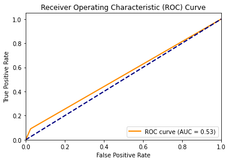
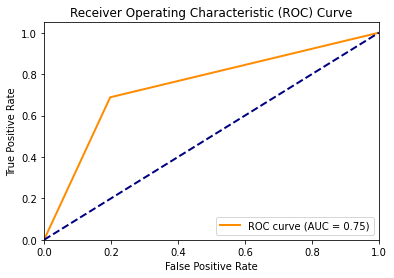
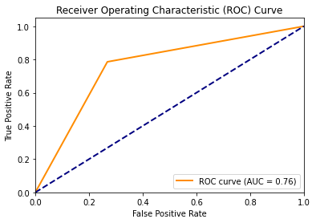
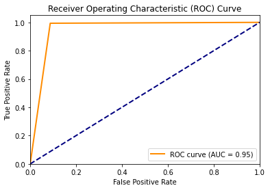

NBFI Vehicle Loan Default Prediction




In this project, we leverage various data analysis and machine learning techniques to build a predictive model for identifying potential loan defaults. The main goal is to develop an accurate and reliable model that can assist NBFI institutions in making informed lending decisions and managing risk effectively.
This repository contains a machine learning project focused on predicting default on Non-Banking Financial Institution (NBFI) vehicle loans.
The dataset used in this project is sourced from a Kaggle competition: NBFI Vehicle Loan Repayment Dataset. It comprises various features related to loan applicants, including income, employment history, credit scores, and more.
Key Contributions:
- Baseline Performance: Initiated the project by establishing a baseline predictive model, achieving an F1 score of approximately 0.13 for default prediction.
- Model Improvements:
- Class Imbalance: Employed various techniques, such as oversampling and SMOTE, to address class imbalance in the dataset.
- Feature Selection: Identified key features, including client's employment, educational background, loan type, home ownership, age of the home, credit scores, and client's city rating, which significantly improved the model's predictive performance.
- Model Selection: Explored multiple machine learning algorithms, including logistic regression, decision trees, random forests, and neural networks, to identify the most suitable model for the task.
- Feature Significance Analysis: Utilized logistic regression analysis to determine the significance of features in predicting loan defaults.